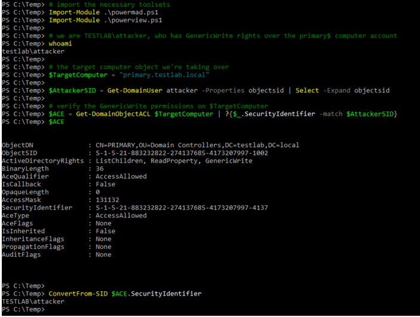

First we’re going to load up our toolsets, confirm our identity, and verify that our current user has the proper DACL misconfiguration to allow abuse. Using PowerView to enumerate the specific ACE in the access control information for our target system (primary.testlab.local), we can see that we (TESTLAB\attacker) have GenericWrite over the PRIMARY$ computer object in Active Directory.

As Elad details in his post, we need control of an account with a service principal name (SPN) set in order to weaponize the S4U2self/S4U2proxy process with resource-based constrained delegation. If we don’t have preexisting control of such an object, we can create a new computer object that will have default SPNs set. This is possible because MachineAccountQuota is set to 10 by default in domains, meaning that regular domains users can create up to ten new machine accounts.
So let’s use the New-MachineAccount function in Kevin Robertson’s Powermad project to stand up “attackersystem$” with the password “Symmer2018!”.

The msDS-AllowedToActOnBehalfOfOtherIdentity field is an array of bytes representing a security descriptor. I couldn’t quite figure out all of the nuances of its structure, so I used the “official” way to add resource-based constrained delegation in my test lab, extracted the msDS-AllowedToActOnBehalfOfOtherIdentity field and converted it to SDDL form. From this template, we can easily substitute in the SID of the newly created computer account that we control (which has a SPN!), convert it back to binary form, and store it into the msDS-AllowedToActOnBehalfOfOtherIdentity field of the computer object we’re taking over using PowerView.

Let’s double check that the security descriptor added correctly. We can see below that the SecurityIdentifier in the entry states that the computer account attackersystem$ has “AccessAllowed”.

Let’s review: we’ve modified a special property of our target computer object (primary.testlab.local) to state that a computer account (TESTLAB\attackersystem$) is allowed to pretend to be anyone in the domain to the primary computer. Since we have the password of attackersystem$ (as we created it, again abusing MachineAccountQuota), we can authenticate as attackersystem$ and abuse the resource-constrained delegation process to compromise primary.testlab.local!
In this case, we’re targeting the service name (sname) of cifs, the service that backs file system access. First let’s prove we don’t have access, and then get the RC4_HMAC hashed version of the password.

And thanks to Elad’s additions, we can execute this with a single Rubeus command.


Since PRIMARY$ is a domain controller, and the ldap service name backs the DCSync process, all we have to do is change the /msdsspn parameter from cifs/primary.testlab.local to ldap/primary.testlab.local if we wanted to DCSync instead. We can execute this for any service name (sname) we’d like to abuse.
Once we’re done abusing the scenario, we can clean up with PowerView as well.